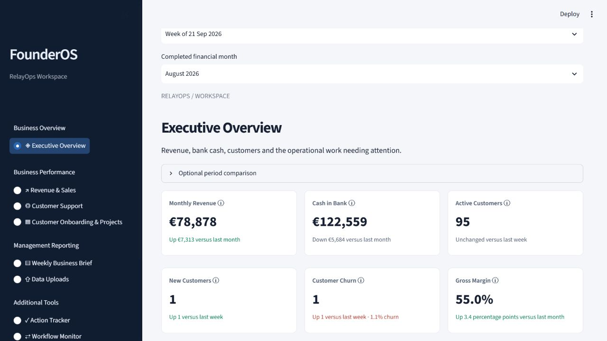
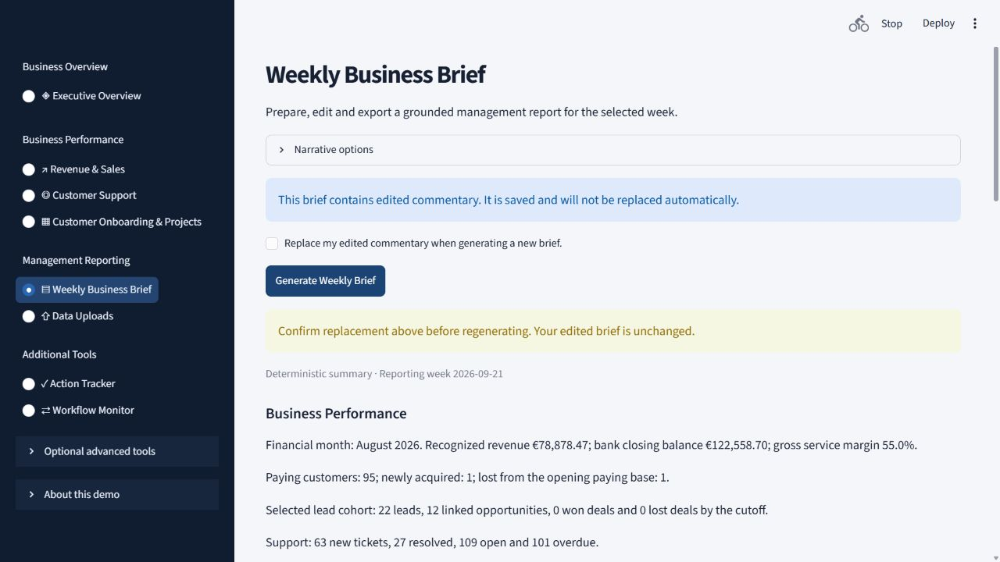
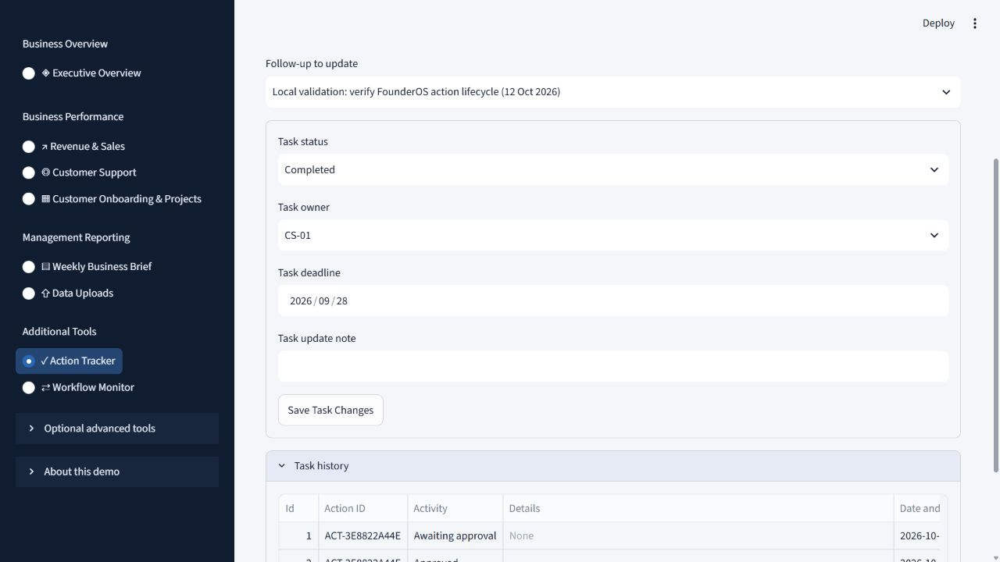

Business Reporting & Automation
FounderOS
From records to decisions
A reporting workspace that validates raw records, calculates performance indicators, surfaces operational issues, and prepares an editable weekly brief.
Working portfolio prototype · Fictional demonstration data01 / The Business Problem
Business information is spread across departmental files, making a coherent weekly management update difficult to prepare.
My Approach
I started with the management questions: what changed, what needs attention, and what should be followed up? I separated the calculation of numbers from the interpretation of those numbers, then built a controlled path from departmental records to a weekly report.
What I Built
- Validate Excel workbooks, preview changes, and confirm imports before saving them.
- Compare revenue, sales, support, and onboarding performance using defined reporting periods.
- Generate and edit a six-section weekly business brief; export PDF, HTML, or Markdown.
- Track follow-ups with an owner, deadline, status, and retained history.
The workflow
How It Works
- 01Validate records→
- 02Calculate indicators→
- 03Prepare weekly brief→
- 04Track follow-ups
Inside the application
Application Preview
Existing captures of the actual application. All figures shown use synthetic demonstration records. Click a screenshot to view it at full size.






Technical Approach
Python performs validation and calculations; Pandas handles tabular records, Streamlit provides the interface, and SQLite stores imports, revisions, reports, and actions in a separate visitor-session workspace in the hosted demo. Deterministic commentary works without a model. Optional AI commentary is checked against evidence and falls back to a labelled deterministic report.
Scope & limitations
Built with synthetic records for the fictional RelayOps startup. Optional AI investigations and approval workflows are outside the core reporting walkthrough. This is a portfolio prototype, not a complete accounting system or a commercially deployed tool.
Explore the Project
Working portfolio prototype using fictional demonstration data.